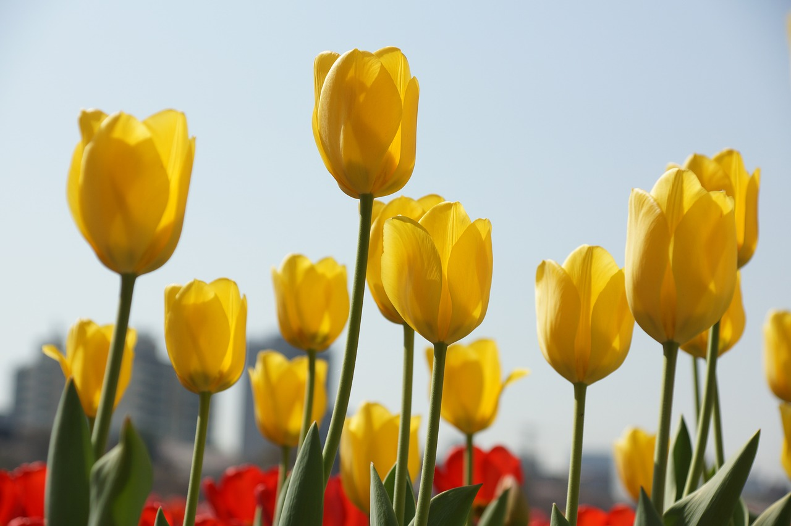

Flowers
Chery blosom image with blur filter image by Hans
Lotus image with sepia filter by jennyzhh2008
rose image with hue filter by Ralphs_Fotos
Sunflowers image with grayscale filter by artellliii72
Daisy image with invert filter by Bessi

Tulip image with contrast filter by jongjoonmoon